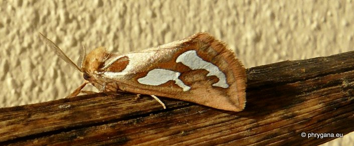
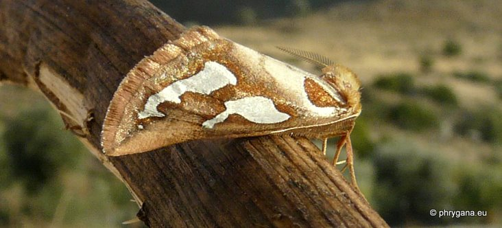

| PHRYGANA | Fauna | Flora |
additions nouveautés |
espèces species |
contact -
info - commentaires phrygana1 (at) gmail.com |
| Particularités crétoises | Galles et mines |
| Axia nesiota Reisser 1962 |
| 285 | Fauna | CIMELIIDAE | Axia Hubner 1821 |
|
 Axia nesiota Melambes (Agios Giorgos) 13 novembre 2011 |
| Ailes brunocre, franges ocres; deux grandes taches blanc pur. | |
| Espèce phytophage: monophage: Euphorbia sp. | |
| Espèce univoltine: période de vol en: octobre | |
| Statut en Crète: indigène | |
| Biotopes en Crète: phrygana, collines | |
| Distribution: Grèce, Crète | |
| Note: vient à la lumière. | |
|
 Axia nesiota Melambes (Agios Giorgos) 13 novembre 2011 |
| 20 novembre 2011 |
| © paul fontaine -- © Phrygana.eu 2007 -- 2013 |